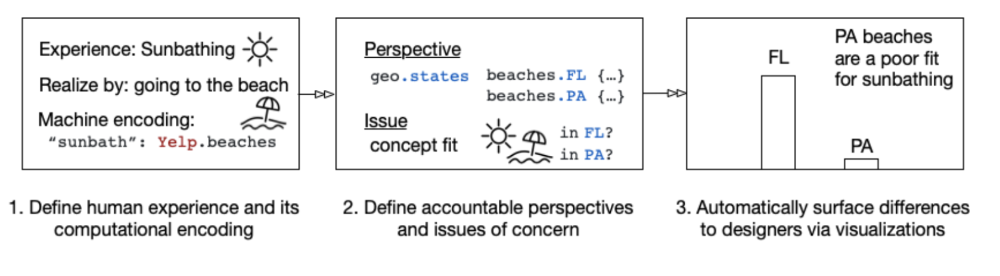

 Project Page
About
This project comes from my involvement doing Human-Computer Interaction through Northwestern's Design, Technology, and Research class, as part of the Delta Lab.
Differ is a difference-aware computing platform that takes as input a machine-interpretable definition of a context-aware experience and outputs to a designer a set of visualizations that surface potential issues in realizing the experience for particular populations of users and in particular settings. Differ has four core computational abstractions that it provides: concept expressions, accountable perspectives,_ issues of concern, and visualizations._ Using these computational abstractions, our prototype provides implementations of (1) a variety of accountable perspectives that capture meaning differences in geographies (urban/rural, states, city neighborhoods), user demographics (age group, budget, wheelchair accessibility), and settings (time of day); and (2) a variety of issue functions such as prevalence, conceptual fit, popularity, safety, and affordability. Broadly speaking, implemented reference systems use a combination of Yelp data (e.g., metadata associated with businesses and places), Foursquare data (for popularity and affordability), public city crime datasets (for safety), city neighborhood data, and census data (for urban/rural). To generate the supported visualizations, Differ uses standard Python libraries such as geopandas, geometry, and plotly to generate a visualization for any given concept expression and reference system.